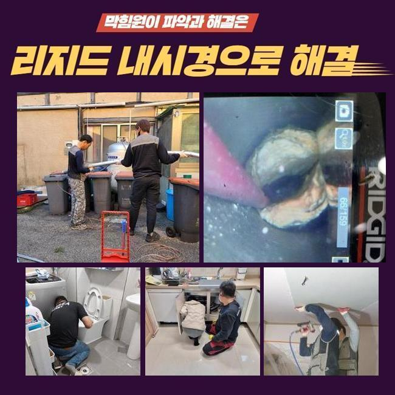
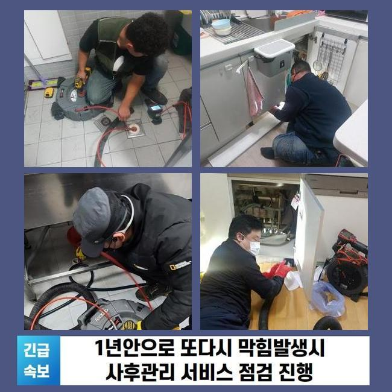
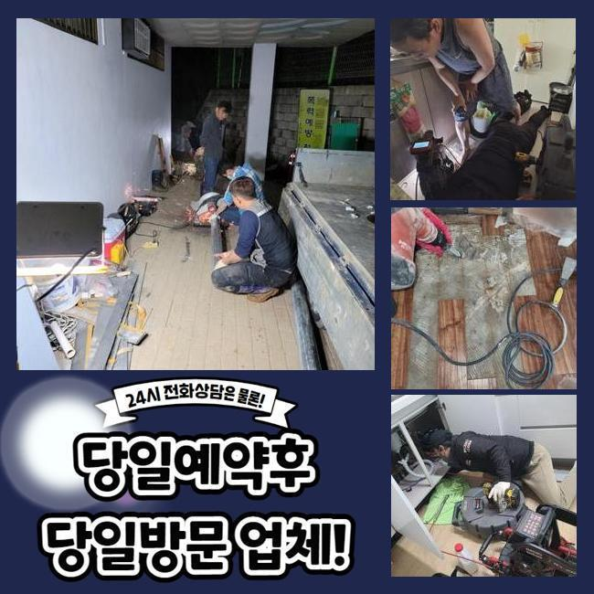
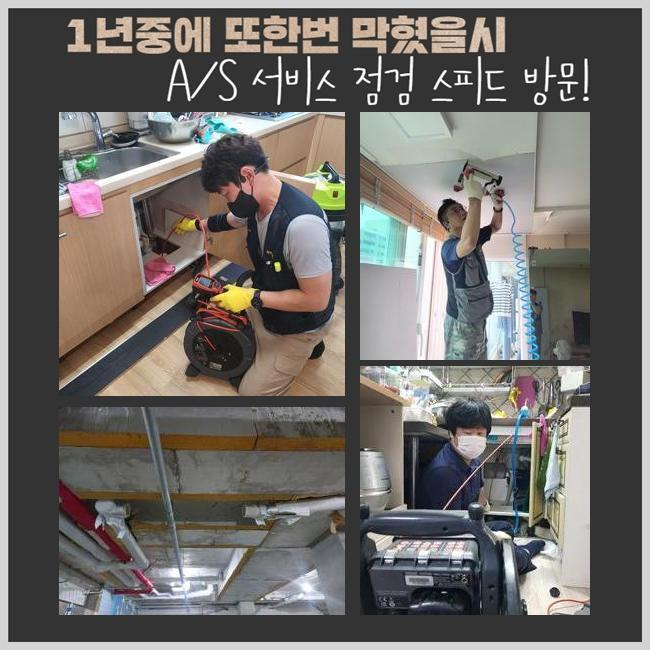
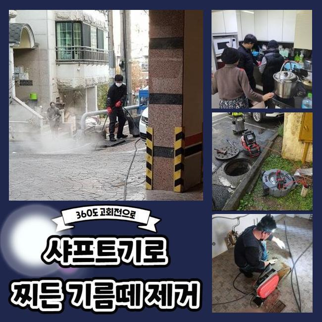
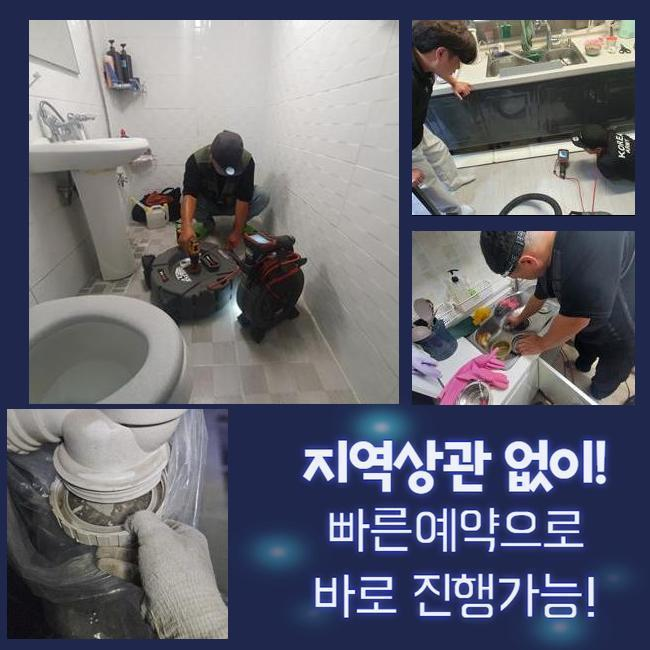
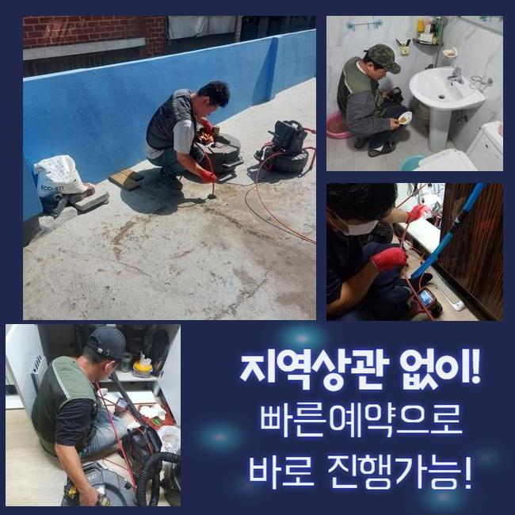

🏠 중구 인현동1가화장실뚫음 남대문로1가 하수구청소 배관공사
용인시 처인구 배관막힘 전문 시공 후기

📋 작업 개요
- 위치: 용인시 처인구, 수원시 영통구, 화성시 동탄
- 서비스 유형: 배관막힘, 하수구청소, 누수수리, 고압세척, 내시경점검
- 작업 일시:
- 업체명: 하수구수사대 (010-5615-2118)
🔍 문제 상황
중구 인현동1가화장실뚫음 남대문로1가 하수구청소 배관공사
여러 하수구 종류들은 특이한 지점들이 있고 자세히 보면 사유도 다 달라요
이번 현장은 관로에 물때 기름때가 혼재하여 점차 심화되고 있었던 중에 찾게된 곳이었어요
장기간 문제가 쌓인 현장들은 이처럼 내부 이물질이 넓게 영향력이 퍼져버리니 모조리 수습을 해주어야 통수의 상태가 안정적으로 재생이 이뤄지는 것입니다
단순막힘을 훌쩍 넘은 수준이라서 위협적인 사건이 터지기 전에 머무르시는 가구원분도 마음껏 일상을 영위하시도록 한시라도 빨리 착수해야겠다 다짐했어요
간과하기 쉬운 하수구는 주기적인 청소가 시행되지 못한다면 하루가 다르게 상황이 더 까다롭게 진화하게 됩니다
물렁한 상태로 기름때들이 다량 머물러있는 현황이었는데 오랫동안 누적된다면 단단한 석회화가 발생될 때도 아주 많아요
떡진 세제나 음식쓰레기 떨어져나간 모발 등이 하수구 어딘가에 정착한다면 물길이 마비가 되어가면서 하수가 원만하게 나가지 못하게 되는겁니다
하수구막힘을 재빠르게 뚫어내지 못한다면 관로가 아예 막혀버려서 역류 현상까지 직면하게 되는 수순입니다
또다른 막힌 부분이 있는지 봐야 원만하게 작업할 수 있는데 내시경을 접목하여 작업하면 내부의 실시간 모습을 살펴보도록 도와주므로 정확성 면에서도 우수한 상황 분석을 가능케합니다
내시경을 관로로 주입하면 배관에 꼬인 형태라서 한치 앞을 보기 힘들더라도 엿볼 수 있게 돼죠

🔎 원인 분석
💡 전문가 진단: 정밀 진단 장비를 사용하여 슬러지의 고착 여부를 판명하고 타격/세척 작업을 실시했습니다.
관찰 작업 후에는 어디에 문제점이 피어났고 얼마만큼 심화됐는지를 상세하게 인지할 수 있답니다
한 영역만 발견하고 끝내지 않고 이상 증세가 중복됐을 수 있으니 촬영을 지속적으로 이어가며 잘못된 장소가 더 없는지 디테일한 검토에 들어가요
전역에 대한 확인을 하면서 재발의 위험이 있는 곳들을 캐치해서 보완하는 단계까지 이행할 수 있게 됩니다
미래에 생길 수 있는 설비의 심각한 이슈를 방어하도록 지원해 주기에 꼼꼼함을 앞세워 작업합니다
내부에 대한 검사도 성패에 영향을 주지만 의뢰인의 말씀으로 수집하게 되는 정보도 고려하여 어떤 상황인지를 분석하게 됩니다
현장에 거주하시면서 시설물과 동거동락하고 자연스럽게 관찰해 오셨으므로 의심스러운 고장의 신호들을 누구보다 잘 아시니까요
오늘의 현장은 지어진 지 꽤 됐으며 아주 오래 전에 하수관 세척을 했고 그 후로는 더는 내부 정화작업을 들어가지 못한만큼 오염이 심했네요
설치된 것이 사용기간이 긴 배관이면 더 면밀히 검토하고 꼼꼼한 케어에 들어가야하는데 만약 시기를 놓치셨다면 막힘건이 굉장히 짧은 주기로 생겨날 수 있습니다
노후화가 이뤄진 하수로는 작은 장애물만 있어도 통로가 막히고 데미지를 심하게 받은 배관은 부품을 바꿔야 할지도 모릅니다
공사에 소요되는 지출이 놀랄만큼 확충될 수 있는 문제이니 주기적 관리만이 경제성을 확보할 수 있다고 강조를 하고 싶습니다
싱크대의 근처에 장착된 난방관 분배기 역시 취약해지고 보기도 안 좋은 지점이 많았기에 여러 시설들을 동시에 정밀하게 검증해 드렸습니다

🔧 작업 과정
맑고 쾌청한 하수구 통로를 보존하면 배관의 능률을 향상시키며 시스템의 내구성과 지속력도 확대하게 됩니다
한 통로만 존재하는 게 아니고 여러 종류가 설치되어 있으므로 모든 관로를 세심하게 확인해야만 문제점을 알 수 있었죠
부엌 싱크대의 수압도 졸졸 나오는 상태이니 봐달라 요청도 해주셨기 때문에 수압도 일단 체크를 해봤습니다
주변부를 둘러봤더니 주방의 수전 부품들도 삐걱대고 더러웠어서 이 부분도 당일 신규 수전으로 교체를 완료했습니다
주방의 물이 불규칙하게 나오고 흐름이 끊기는 것도 현장에서 보였는데 이것은 일부 파트에 녹이 발생하여 물흐름이 느릿하고 미약해지는 것으로 예측할 수도 있어요
주 배관을 통해서 하수가 모여서 내려가야 하지만 어딘가가 고장이 나면 누수가 나타나는 케이스도 꽤나 됩니다
내부 압력을 못이기는 노후화가 진행된 배수로는 터지거나 무너져 내리는 사태도 촉발될 수 있어요
많은 영역들이 훼손되어 버렸다면 빠져나가는 물로 인한 피해도 더욱 심해지고 파이프라인이 완전히 꺾여버리기도 하는 극심한 사건이 터지기도 해요
한 파트에만 노폐물이 차지하고 있으면 특정 섹션만 포커싱을 해서 하수구 세척을 해주면 극복이 되는데요
하지만 이물이 광범위하게 흩어져있다면 어느 쪽이 핵심적인 장애인지 쉽게 인식할 수 없으니 전체 청소가 필히 필요합니다
작업 진행이 지연될 수 있으며 해당 건물에 취약한 배수관이 달려있는 건물이라면 더 신중한 시공을 계속 이어가야 하니 보다 늦게 끝나게 됩니다
막힌 곳을 뚫는 것도 중요하지만 건물의 안전 확보를 저희의 모토로 삼고 꼼꼼하게 청소 작업을 착실하게 이어가고 있습니다!
흔하게 발견되는 찌꺼기들로 인해 빚어질 때가 우세하긴 하나 상상 못 할 원인으로 트러블이 유발되기도 한답니다
전혀 감을 잡지도 못할 배관 시스템상의 결점이나 켜켜이 쌓인 노폐물들이 쌓이며 석화돼 순환을 저해하는 상황도 여러곳에서 현재도 촉발되고 있어요
스스로 건드리기 보다는 전문적인 진단을 거친 다음에 효율적 기구를 접목하는 것이 최고의 안정성을 자랑하며 내밀한 위치일수록 감도 잡기 힘들겁니다
단순히 관통기나 비효율적인 방식으로 접근한다면 배관에 대한 파손을 불러일으킬지도 모르는 일이죠!
보일러 관련 기관이 잘 달렸는지 마무리로 점검을 거친 뒤에 물 배출 과정에서의 결함이 잔여하는지 보고 마감까지 정성을 다해 시행했어요


✅ 작업 완료
말끔하게 청소가 끝났는지 조사해보고 통수검사도 실시하여 부실함없이 탄탄한 내부를 조성했고 하수구의 모범적인 사용법까지 세세하게 가르쳐드렸죠
구옥에서 살고 계신다면 하수구 외의 전체 설비에 관련한 안전도 확보해야 하니 사전 예방을 잘 해주시길 조언해 드리고 싶네요
정상적인 하수 폐기 중의 의문점이 생겼거나 쿰쿰한 냄새가 나고 물이 느릿느릿 내려가는 장면을 발견하셨다면 더이상 내버려두지만 마시고 저희 업체의 지원을 요청해주세요
하수구의 자세한 탐색을 기반으로 기능적인 구멍이 있는 곳을 새걸로 바꿔주거나 안정감있게 수선하면서 정상적으로 복구하였습니다
아무리 늦은 시간이라도 가벼운 마음으로 전화 걸어주시면 편의성있게 의뢰하실 수 있고 최대한 속히 찾아뵙고 상세한 작업 계획의 안내를 전담해드리고 있사오니 하수의 장애가 보인다면 저희만 믿어주시면 됩니다




⚠️ 하수구 배관 막힘 예방 및 관리 가이드
- ✅ 머리카락, 비닐, 물티슈 등 물에 분해되지 않는 이물질은 절대 흘려보내지 마세요.
- ✅ 기름기 많은 식기는 설거지 전 키친타올로 먼저 기름때를 닦아내세요.
- ✅ 주기적으로 배수구에 뜨거운 물을 가득 부어주어 유지방 고착을 방지하세요.
- ✅ 작업 후 1년 이내 재발 시 무상 A/S 보증 서비스를 제공합니다.
💡 핵심 정리
- 확실한 장비 작업(내시경 점검 및 샤프트 스케일링)으로 원인을 뿌리 뽑습니다.
- 작업 후 1년 이내에 동일한 부위 재발 시 100% 무상 A/S 서비스를 보장합니다.
- 서울 · 경기 · 인천 전 지역에 24시간 언제든 긴급 출동할 수 있도록 항시 대기 중입니다.
❓ 자주 묻는 질문 (FAQ)
🚨 용인시 처인구 배관막힘 문제로 고민이신가요?
정확한 원인 진단과 확실한 시공으로 재발 없는 해결을 약속드립니다.
24시간 긴급 출동 | 서울 · 경기 · 인천 전지역 | 1년 내 재발 시 무상 A/S